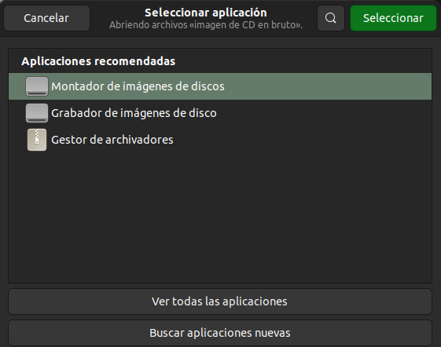
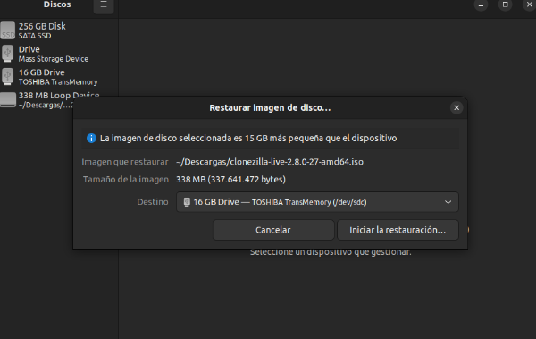

Para poder iniciar con este programa lo primero que necesitamos es crear un pendrive de arranque con clonezilla, para ello dependiendo del sistema operativo que estemos usando haremos dicho pendrive de una forma u otra. En Windows usaremos el programa Rufus en el cual simplemente seleccionaremos el pendrive que vamos a hacer booteable y la imagen de clonezilla que previamente hemos descargado, le daremos a empezar y solamente tendremos que esperar a que el programa termine y ya tendremos nuestro pendrive booteable con clonezilla.

En caso de que nos encontremos en Ubuntu nos ayudaremos de la propia interfaz gráfica y de Ubuntu que incorpora una herramienta para hacer un pendrive booteable. Le daremos click derecho a la imagen de clonezilla que hemos descargado, seleccionaremos abrir con otra aplicación y le daremos a grabador de imágenes de disco. Una vez estemos dentro seleccionamos el pendrive que queremos hacer booteable y esperamos a que termine.
 Una vez tengamos nuestro pendrive de arranque creado lo que tenemos que hacer es iniciar clonezilla insertando dicho pendrive en la máquina que queramos utilizar. Nos deberá de aparecer la siguiente imagen, si te ha salido esto, significa que tu pendrive funciona correctamente.

Para hacer una restauración de imagen por Samba tendremos que haber completado los pasos realizados en la entrada anterior de la página web en la que hacemos la copia de seguridad usando clonezilla de forma remota. Si hemos realizado una copia de seguridad de forma remota de esa forma ahora solo tendremos que seguir los mismos pasos que hemos hecho anteriormente y detenernos en el apartado donde nos pregunta si queremos guardar el disco como una imagen o restaurar el disco desde una imagen. En este caso, lo que haremos será seleccionar el apartado de restaurar la imagen restoredisk
Una vez nos haya preguntado por la opción de restauración solo nos queda elegir el disco en el que queremos realizar la restauración de la imagen que tenemos en la carpeta compartida y seleccionar las opciones restantes a nuestro gusto.
Y así es como podemos restaurar la imagen de un disco de forma remota sin necesidad de tener conectado otro pendrive o un disco duro que nos sirva de almacenamiento temportal.